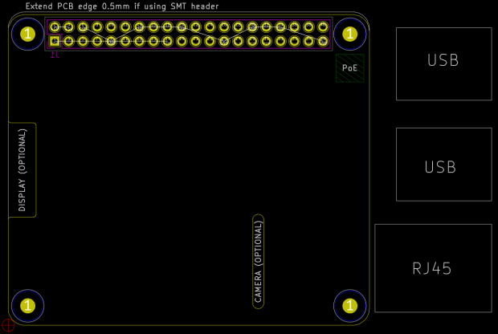

This project template forms the basis of an expansion board (HAT) for the Raspberry Pi single board computers with a 40-pin GPIO header.
This includes the following models:
Note: for the Pi Zero (W) or smaller designs, see the RaspberryPi-uHAT template.
This project includes a PCB edge set according to the Raspberry Pi HAT Mechanical Specification with connectors placed correctly to align the two boards. An alternate edge is included on the User.Drawings layer for the use with an SMT connector. Cutouts have also been defined for the camera and the display cables.
The schematic includes an ID EEPROM chip along with the necessary support components. It does not specify footprints for the ID EEPROM. It is up to the user to choose an appropriate EEPROM chip and footprints.
The official Raspberry Pi HAT Specification includes additional information and a design guide.

(c) 2021 Caleb Reister
Adapted from the raspberrypi-gpio-40pin template:
(c) 2016 Ashton Johnson
(c) 2016 Kicad Developers